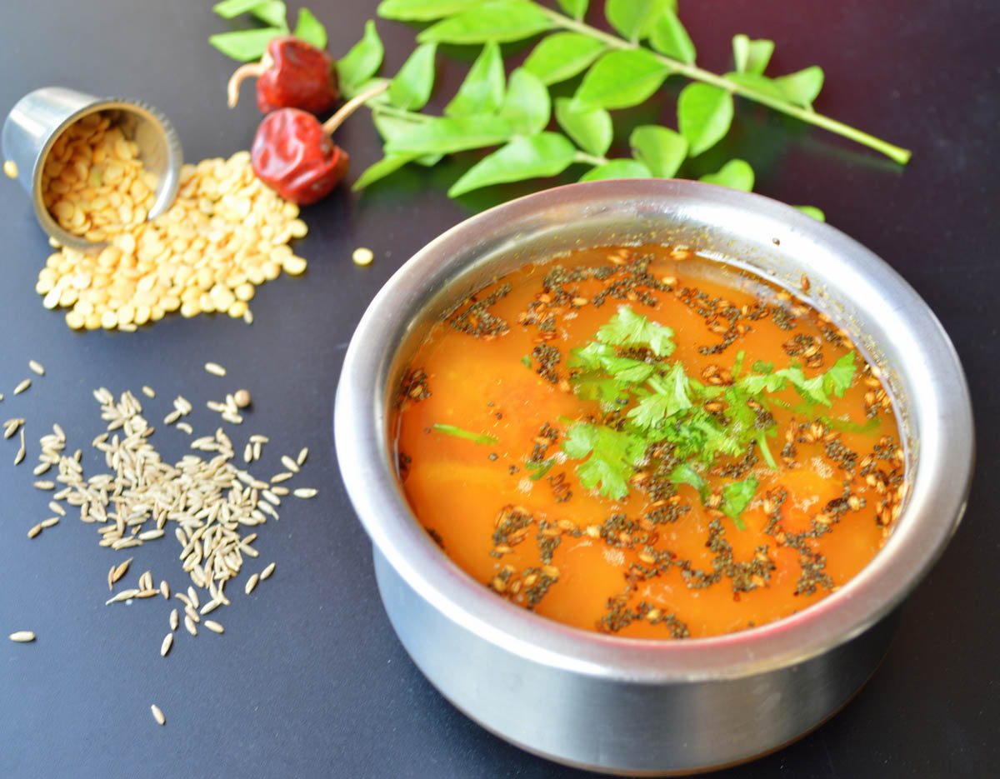

Welcome to Ammu's Kitchen
Aloo paratha

Aloo paratha is one of the most popular Indian breakfast. It consist of dough which is stuffed with
a mixture of mashed potatos and spices. Aloo paratha in Northern India is usually served with butter,
curd and pickles.
Ingredients
- 250 gm wheat flour
- 1 cup water
- 50 ml oil
- 500 gm potatoes
- coriander leaves
- ginger garlic paste
- 75 gm onions
- 10 to 15 green chillies
- chilli powder & pinch of salt
- 10 ml lime juice
Method of preparation
- Make a soft dough by mixing wheat flour and a cup of water.
- Divide the dough into seperate balls, as per the size required .
- Boil the potatoes & remove its skin to mash it.
- Add the rest of the ingredients to the mashed potatoes and mix it well.
- Take each portion of the dough, flatten it on the palm. Stuff the filling in the dough and roll it again.
- Flatten the balls into 1/2 inch thick round parathas using a rolling pin.
- Heat a pan with a little oil on a medium flame. Cook the parathas until both sides are golden brown.
- Hot Aloo parathas are ready to serve
Mysore Rasam
Mysore Rasam is a South Indian main course usually served with rice
. It is traditionally prepared
using Tamarind Juice. This Rasam is originated from the Royal city of Mysore, hence it is named as
'Mysore Rasam'.
Ingredients
- Small sized Tamarind
- Two Tamotoes
- Two teaspoons of Channa Dal & Bengal Gram
- Two tablespoon of Coriander seeds
- Two tablespoon of Toor Dal
- 1/4 teaspoon of Pepper & Cumin seeds
- Three Red Chillies
- One teaspoon of Mustard seeds
- Two spoons of Ghee
- Few Curry leaves and Coriander leaves
- 1/4 teaspoon of Hing
- Salt to taste
Method of preparation
- Pressure cook the Toor dal, smash it and keep it aside.
- Soak tamarind in water and extract the juice. Pour it into a heavy bottomed vessel.
- Add chopped tomatoes to the extracted tamarind juice and keep it on the flame. Add hing and let the mixture boil till the raw smell of tamarind goes away
- Take a mini sauce pan and keep in on flame. Add oil , red chillies, coriander seeds, channa dal to fry it till the dal turns golden brown.
- Grind the above mixture with pepper seeds till it become a powder.
- Now inside the vessle: When the raw smell of tamarind goes away, add the smashed dal and adjust the water content. Add salt to taste and Boil the mixture till the arival of froth. Turn off the flame as the mixture is boiled sufficiently
- Add the grounded rasam powder prepared and mix it well.
- For Seasoning: In a separate pan, heat two spoons Ghee to a cetain degree. Add mustard seeds, broken dry red chilli and fry for 10 seconds.
- Add broken curry leaves and fry it for a copule of seconds .
- Mix this seasoniong with the rasam. Garnish it with fresh coriander leaves.
- Healthy Mysore Rasam is ready to taste.
Maggie Pakoda

Maggie Pakoda is very easy and a quick snack recipe which is loved by both kids and adults. It is
usually served with tomato ketchup or chilli sauce.
Ingredients
- Maggi – 2 packets
- Water – 1 cup
- ⅓ cup, finely chopped onions,cabbage & capsicum
- Three finely chopped Green chilies
- Ginger Garlic paste
- ¼ cup Besan flour
- Three tablespoon of Rice flour
- 1/4 cup of coriander leaves
- Oil to fry
- Salt to taste
Method of preparation
- Combine water and Maggi Masala in a Bowl & start boiling it.
- Add the Maggi noodles to above mixture and allow it to cook.
- The water should evaporate completely for the noodles to be cooked atleast for 80% .
- Take another bowl and add besan flour, rice flour, cabbage, onion, capsicum, green chilies, ginger-garlic, coriander leaves, and salt in a bowl. Mix it well.
- Add the boiled Maggi noodles and mix everything very gently without mashing the Maggi noodles. Add 2-3 tablespoon of water, 1 tabelspoon at a time to bring the mixture together.
- Divide the mixture into 18 seperate portions. Rub the palm with some oil and shape each portion like a ball and flatten it slightly.
- Heat the oil to about 200°C. Carefully drop in some Maggi Mixture and fry it till it becomes golden brown and crunchy.
- Stain the pakodas well and put them on a tissue paper.
- Spicy Maggie Pakodas is ready to serve.